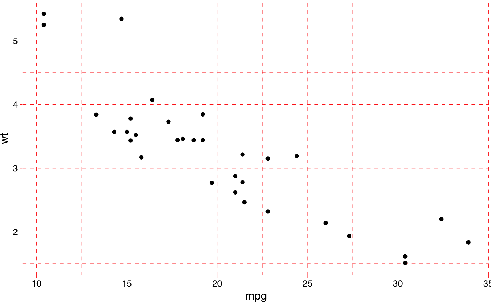
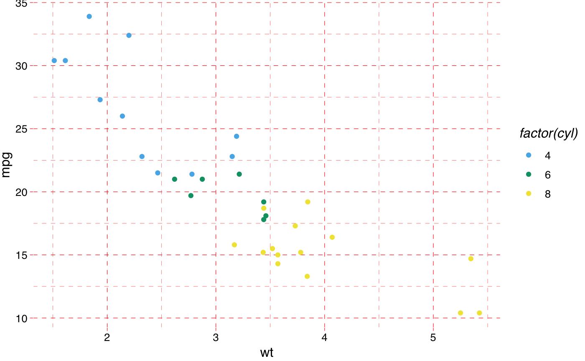
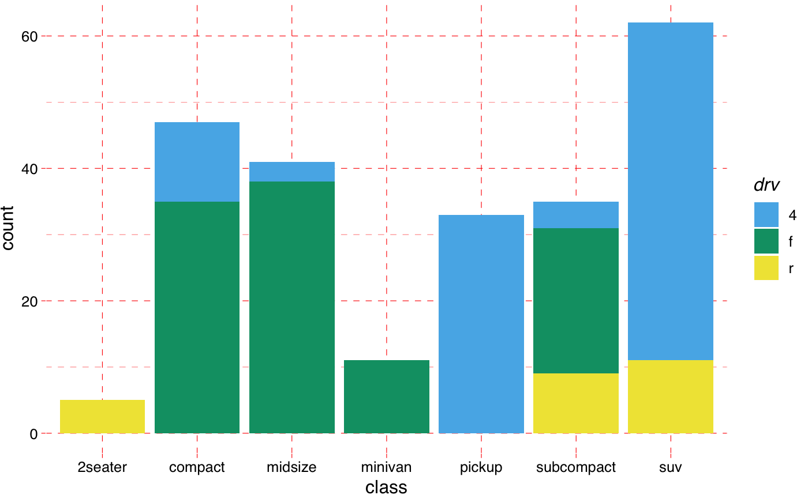

The pander ships with a default theme when the 'unify plots' option is
enabled via panderOptions, which is now also available outside of pander internals, like evals, eval.msgs or Pandoc.brew.
theme_pander(base_size = 12, base_family = "sans", nomargin = TRUE, ff = NULL, fc = "black", fs = NULL, gM = TRUE, gm = TRUE, gc = "grey", gl = "dashed", boxes = FALSE, bc = "white", pc = "transparent", lp = "right", axis = 1)
| base_size | base font size |
|---|---|
| base_family | base font family |
| nomargin | suppress the white space around the plot (boolean) |
| ff | font family, like |
| fc | font color (name or hexa code) |
| fs | font size (integer). Deprecated: use |
| gM | major grid (boolean) |
| gm | minor grid (boolean) |
| gc | grid color (name or hexa code) |
| gl | grid line type ( |
| boxes | to render a border around the plot or not |
| bc | background color (name or hexa code) |
| pc | panel background color (name or hexa code) |
| lp | legend position |
| axis | axis angle as defined in |
require("ggplot2") require("pander")#>p <- ggplot(mtcars, aes(wt, mpg, colour = factor(cyl))) + geom_point() p + theme_pander() + scale_color_pander()